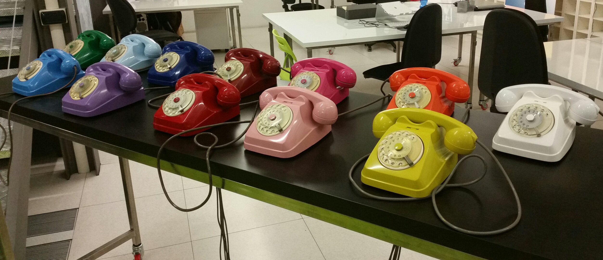
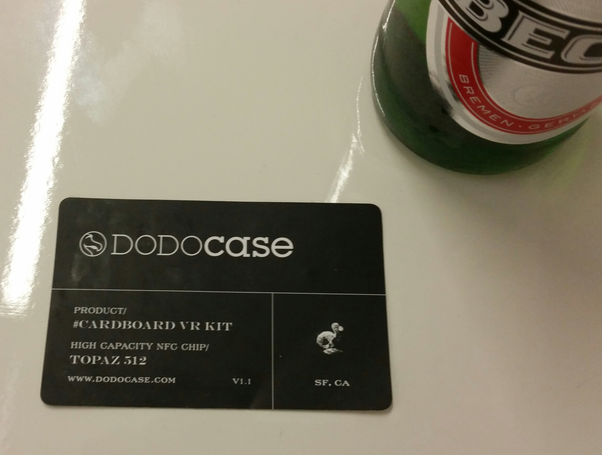

Milano Meetups and My New NFC Business Card
We completed the DevDays conference and Meetup in Munich and now arrived in Milano, bella Italia.
Tonight we are holding our Inaugural 3D Lovers Meetup here at Coworking LOGIN, Via Stefanardo da Vimercate 28, Milano.

We only just noticed that another interesting inaugural meetup is taking place in the same location at the same time, the First MEAN Event: Break the Ice.
MEAN stands for MongoDB, Express, Angular.js and Node.js, so you can see how well it fits.
Main topic for today: new functionality of ECMAScript 6, the base for the next release of JavaScript et al, scheduled for release in the middle of 2015.
Here is the slide deck.
My New Near Field Communication Business Card
We have been handing out Google cardboard boxes at our meetup events.
Each box includes an NFC card. Simply hold it against the back of your NFC-enabled phone and it will take you straight to the Dodocase web site.

You can easily reprogram it to take you to any other URL you like, in just 60 seconds, e.g. using the free Tagstand NFC Writer. There are lots of other free NFC write apps in the mobile stores as well.
I grabbed a card and set it up to link to About the Author on The Building Coder.
No more paper business cards for me, just a few electrons.
Sustainable.
And cool :-)
Cloud Accelerator Workshop Web Site Live
Talking about cool web oriented technology, the Autodesk Cloud Accelerator web site is now live – I already mentioned the cloud accelerator workshop invitation a couple of weeks ago.